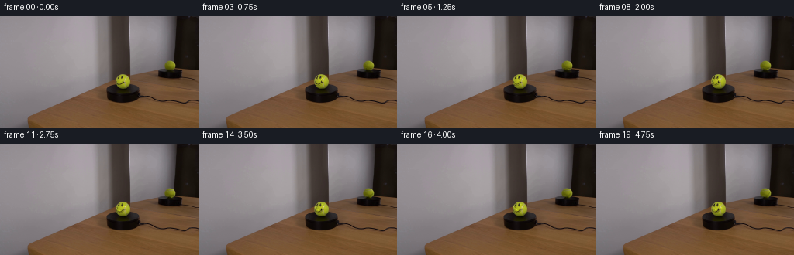
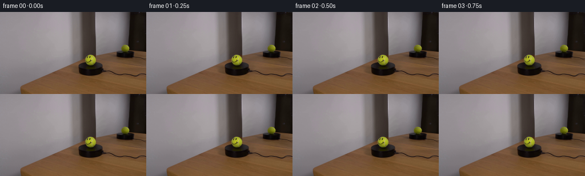

CODING AGENTS AS PIXEL WORLD MODELS
traex/GPT-5.6-Sol · 0118
点击播放 · 原生 RGB 像素
逐轮保存的候选
回放视频、检查图与代码变化。
每份候选均可单独播放。实际图片检查记录在下方工具轨迹中。
候选 01播放与检查图
点击播放 · 原生 RGB 像素


展开代码变化
--- 上一保存版本
+++ 本次保存版本
@@ -0,0 +1,123 @@
+from pathlib import Path
+
+import cv2
+import numpy as np
+from PIL import Image
+
+import artifact_io
+
+
+# The camera, support, and mirror remain completely fixed. Only the painted / felt
+# detail on each spherical image is moved; leaving the broad illumination fixed is
+# important, since a turning ball does not carry the studio highlight around with it.
+def yellow_components(rgb):
+ hsv = cv2.cvtColor(rgb, cv2.COLOR_RGB2HSV)
+ mask = cv2.inRange(hsv, np.array((20, 60, 45), np.uint8),
+ np.array((45, 255, 255), np.uint8))
+ count, labels, stats, centers = cv2.connectedComponentsWithStats(mask)
+ found = []
+ for i in range(1, count):
+ area = int(stats[i, cv2.CC_STAT_AREA])
+ if area >= 60:
+ found.append((area, labels == i, tuple(centers[i])))
+ return sorted(found, reverse=True, key=lambda item: item[0])
+
+
+def convex_silhouette(component):
+ ys, xs = np.where(component)
+ points = np.column_stack((xs, ys)).astype(np.int32)
+ hull = cv2.convexHull(points)
+ solid = np.zeros(component.shape, np.uint8)
+ cv2.fillConvexPoly(solid, hull, 255)
+ # A narrow antialiased edge, while retaining the silhouette from the photograph.
+ return cv2.GaussianBlur(solid.astype(np.float32) / 255.0, (3, 3), 0.42)
+
+
+def make_turning_detail(rgb, component, center, radius, dark_limit):
+ """Separate dark face/seam detail from fixed spherical lighting."""
+ h, w = component.shape
+ yy, xx = np.mgrid[:h, :w]
+ cx, cy = center
+ rr = np.hypot(xx - cx, yy - cy)
+ value = rgb.max(axis=2)
+
+ # Face ink and the dark tennis-ball seam. The radius cut prevents the contact
+ # shadow and the outer shaded rim from becoming part of the rotating paint.
+ detail_core = ((rr < radius * 0.82) & (value < dark_limit)).astype(np.uint8)
+ detail_core = cv2.morphologyEx(detail_core, cv2.MORPH_CLOSE,
+ np.ones((2, 2), np.uint8))
+ detail_core &= (convex_silhouette(component) > 0.55).astype(np.uint8)
+
+ # Inpaint a clean felt surface underneath the markings. TELEA samples the
+ # neighboring yellow/green felt and naturally preserves the coarse low-res look.
+ clean = cv2.inpaint(rgb, detail_core * 255, 2.25, cv2.INPAINT_TELEA).astype(np.float32)
+ original = rgb.astype(np.float32)
+ soft = cv2.GaussianBlur(detail_core.astype(np.float32), (5, 5), 0.68)
+ soft = np.clip(soft * 1.28, 0.0, 1.0)
+ residual = (original - clean) * soft[..., None]
+ base = original - residual
+ return base, residual, convex_silhouette(component)
+
+
+def rotate_residual(residual, center, angle_degrees):
+ h, w = residual.shape[:2]
+ # OpenCV's positive image angle is counter-clockwise, hence the minus sign.
+ matrix = cv2.getRotationMatrix2D(center, -angle_degrees, 1.0)
+ return cv2.warpAffine(residual, matrix, (w, h), flags=cv2.INTER_CUBIC,
+ borderMode=cv2.BORDER_CONSTANT, borderValue=0)
+
+
+def main():
+ case_dir = Path(__file__).resolve().parent
+ first = np.asarray(Image.open(case_dir / "first_frame.png").convert("RGB"),
+ dtype=np.uint8)
+
+ components = yellow_components(first)
+ if len(components) < 2:
+ raise RuntimeError("Could not locate both the tennis ball and its reflection")
+
+ # The larger yellow component is the foreground ball; the smaller, farther-right
+ # one is its side-view reflection in the angled mirror.
+ _, ball_component, ball_center = components[0]
+ _, reflection_component, reflection_center = components[1]
+
+ ball_base, ball_detail, ball_shape = make_turning_detail(
+ first, ball_component, ball_center, radius=11.0, dark_limit=116)
+ refl_base, refl_detail, refl_shape = make_turning_detail(
+ first, reflection_component, reflection_center, radius=8.2, dark_limit=94)
+
+ original = first.astype(np.float32)
+ frames = []
+ for index in range(20):
+ if index == 0:
+ # Contract requirement: byte-for-byte identity with the supplied image.
+ frames.append(first.copy())
+ continue
+
+ # Just over one sixth of a revolution in five seconds: clearly perceptible,
+ # but slow enough to read as a measured real-time demonstration.
+ angle = 68.0 * index / 19.0
+ turned_ball = rotate_residual(ball_detail, ball_center, angle)
+
+ # A plane mirror reverses the apparent handedness of image-plane rotation.
+ turned_reflection = rotate_residual(refl_detail, reflection_center, -angle)
+
+ # Start from the untouched photograph. Swap in only the cleaned-and-turned
+ # ball interiors, so table grain, mirror frame, shadows, and camera stay fixed.
+ frame = original.copy()
+ ball_render = ball_base + turned_ball
+ a = ball_shape[..., None]
+ frame = frame * (1.0 - a) + ball_render * a
+
+ reflection_render = refl_base + turned_reflection
+ ar = refl_shape[..., None]
+ frame = frame * (1.0 - ar) + reflection_render * ar
+
+ frames.append(np.clip(np.rint(frame), 0, 255).astype(np.uint8))
+
+ frames = np.stack(frames, axis=0)
+ artifact_io.save(frames, case_dir)
+
+
+if __name__ == "__main__":
+ main()
可观测工具轨迹
实际执行的命令与返回图片。
命令 1exit 0
/bin/bash -lc "cat GENERATION_RULES.md && printf '\\n---PROMPT---\\n' && cat prompt.txt"
命令 2exit 0
/bin/bash -lc "find . -maxdepth 2 -type f -printf '%p\\n' | sort && python3 - <<'PY'
from PIL import Image
im=Image.open('first_frame.png')
print(im.mode, im.size)
import numpy as np
x=np.array(im)
print('minmax',x.min(axis=(0,1)),x.max(axis=(0,1)), 'mean',x.mean(axis=(0,1)))
PY"命令 3exit 0
/bin/bash -lc "python3 - <<'PY'
from PIL import Image
import numpy as np
im=np.array(Image.open('first_frame.png'))
h,w,_=im.shape
# print 64x36 map classification by brightness/hue
chars=' .,:;irsXA253hMHGS#9B&@'
for y in range(0,h,4):
s=''
for x in range(0,w,4):
p=im[y:y+4,x:x+4].mean((0,1)); r,g,b=p; v=p.mean()
# hues chars for salient
if r>g*1.25 and r>b*1.2: c='R'
elif g>r*1.15 and g>b*1.1: c='G'
elif b>r*1.15 and b>g*1.1: c='B'
elif r>100 and g>90 and b<70: c='Y'
else: c=chars[min(len(chars)-1,int(v/256*len(chars)))]
s+=c
print(s)
PY"命令 4exit 0
/bin/bash -lc "python3 - <<'PY'
from PIL import Image
import numpy as np
from scipy import ndimage
im=np.array(Image.open('first_frame.png')); f=im.astype(float)/255
mx=f.max(2); mn=f.min(2); sat=(mx-mn)/(mx+1e-5)
# reports masks
masks={
'yellow':(im[:,:,0]>70)&(im[:,:,1]>60)&(im[:,:,0]>im[:,:,2]*1.3)&(im[:,:,1]>im[:,:,2]*1.15),
'bright_yellow':(im[:,:,0]>100)&(im[:,:,1]>90)&(im[:,:,2]<80),
'dark':mx<.18,
'neutral':sat<.12,
}
for name,m in masks.items():
lab,n=ndimage.label(m)
comps=[]
for i in range(1,n+1):
yy,xx=np.where(lab==i); N=len(xx)
if N>=5: comps.append((N,(xx.min(),yy.min(),xx.max(),yy.max()),(xx.mean(),yy.mean())))
print('\\n',name,sorted(comps,reverse=True)[:20])
# 16x9 block RGB mean
print('\\nblock means 16x12')
for y in range(0,144,12):
for x in range(0,256,16):
p=im[y:y+12,x:x+16].mean((0,1)).astype(int)
print('%02x%02x%02x'%tuple(p),end=' ')
print()
PY"命令 5exit 0
/bin/bash -lc "python3 - <<'PY'
from PIL import Image
import numpy as np
im=np.array(Image.open('first_frame.png'))
def show(x0,x1,y0,y1):
print(' '+''.join(str(x//10%10) for x in range(x0,x1)))
print(' '+''.join(str(x%10) for x in range(x0,x1)))
for y in range(y0,y1):
s=''
for x in range(x0,x1):
r,g,b=map(int,im[y,x]); v=(r+g+b)/3
# yellow ball
if r>80 and g>70 and b<70 and r+g>2.7*b: c='Y' if v>85 else 'y'
elif v<15:c='@'
elif v<30:c='#'
elif v<50:c='X'
elif v<70:c='x'
elif v<90:c='o'
elif v<110:c=':'
elif v<130:c=';'
elif v<150:c='+'
elif v<170:c='-'
else:c='.'
s+=c
print(f'{y:3}'+s)
show(130,190,55,115)
print('mirror')
show(198,256,0,90)
PY"命令 6exit 0
/bin/bash -lc "python3 - <<'PY'
from PIL import Image
import numpy as np
im=np.array(Image.open('first_frame.png')).astype(int)
# classify saturation hue
for y in range(68,116):
s=''
for x in range(135,190):
r,g,b=im[y,x]; mx=max(r,g,b); mn=min(r,g,b)
if mx<22: c='@'
elif mx<45:c='#'
elif mx<65:c='X'
elif (g-b)>35 and (r-b)>45:
c='O' if g>100 else ('o' if g>75 else 'y')
elif r-b>35 and r-g>8:c='w' # wood
elif mx-mn<12:c='n'
else:c='.'
s+=c
print(f'{y:3} {s}')
# list colors at ball region by freq
from collections import Counter
for box in [(145,72,181,115),(205,50,237,88)]:
x0,y0,x1,y1=box
c=Counter(map(tuple,im[y0:y1,x0:x1].reshape(-1,3)))
print(box,c.most_common(20))
PY"命令 7exit 0
/bin/bash -lc "python3 - <<'PY'
from PIL import Image
import numpy as np
im=np.array(Image.open('first_frame.png'))
for y in range(72,97):
print('\\ny',y)
for x in range(145,178):
r,g,b=im[y,x]
print(f'{r:02x}{g:02x}{b:02x}',end=' ')
print()
PY"命令 8exit 0
/bin/bash -lc "python3 - <<'PY'
from PIL import Image
import numpy as np
im=np.array(Image.open('first_frame.png')).astype(float)
# lab-ish yellow score; show symbols with RGB for foreground sphere
for y in range(73,98):
s=''
for x in range(143,177):
r,g,b=im[y,x];
if r+g<60: ch='@'
elif r+g<100:ch='#'
elif r>1.5*b and g>1.45*b and g>45:
lum=(r+g)/2
ch='Y' if lum>155 else ('y' if lum>120 else ('+' if lum>90 else 'o'))
elif max(r,g,b)-min(r,g,b)<15: ch='.'
else:ch=' '
s+=ch
print(f'{y:3} {s}')
PY"命令 9exit 0
/bin/bash -lc "sed -n '1,240p' artifact_io.py && python3 - <<'PY' mods=['cv2','scipy','PIL','imageio'] for x in mods: try: m=__import__(x); print(x,'ok',getattr(m,'__version__','')) except Exception as e: print(x,e) PY"
命令 10exit 0
/bin/bash -lc "python3 - <<'PY'
from PIL import Image
import numpy as np
im=np.array(Image.open('first_frame.png'))
print(' '+''.join(f'{x%10}' for x in range(147,175)))
for y in range(74,95):
s=''
for x in range(147,175):
r,g,b=map(int,im[y,x]); avg=(r+g)/2
if r<45 and g<45:ch='@'
elif r<70 and g<70:ch='#'
elif g>145 and r>140: ch='B'
elif g>120 and r>115:ch='Y'
elif g>90 and r>85:ch='y'
elif g>65 and r>60:ch='+'
else:ch='.'
s+=ch
print(f'{y:3} {s}')
# coordinate values in 150:172
for y in range(76,90):
print(y,[(x,tuple(im[y,x])) for x in range(150,172) if im[y,x,1]<80])
PY"命令 11exit 0
/bin/bash -lc "cat > .tmp/proto.py <<'PY'
from PIL import Image
import numpy as np, cv2
im=np.array(Image.open('first_frame.png'))
# HSV ranges and contours
hsv=cv2.cvtColor(im,cv2.COLOR_RGB2HSV)
for lo,hi in [((20,60,45),(45,255,255)),((18,80,60),(42,255,255)),((22,50,40),(42,255,255))]:
m=cv2.inRange(hsv,np.array(lo),np.array(hi))
n,l,st,cent=cv2.connectedComponentsWithStats(m)
print(lo,sorted([(z[4],tuple(z[:4]),tuple(c)) for z,c in zip(st[1:],cent[1:])],reverse=True)[:10])
print('sample hsv',[(tuple(im[y,x]),tuple(hsv[y,x])) for y,x in [(81,160),(76,158),(80,165),(85,160),(89,160),(63,220)]])
PY
python3 .tmp/proto.py"命令 12exit 0
/bin/bash -lc "cat > generate.py <<'PY'
from pathlib import Path
import cv2
import numpy as np
from PIL import Image
import artifact_io
# The camera, support, and mirror remain completely fixed. Only the painted / felt
# detail on each spherical image is moved; leaving the broad illumination fixed is
# important, since a turning ball does not carry the studio highlight around with it.
def yellow_components(rgb):
hsv = cv2.cvtColor(rgb, cv2.COLOR_RGB2HSV)
mask = cv2.inRange(hsv, np.array((20, 60, 45), np.uint8),
np.array((45, 255, 255), np.uint8))
count, labels, stats, centers = cv2.connectedComponentsWithStats(mask)
found = []
for i in range(1, count):
area = int(stats[i, cv2.CC_STAT_AREA])
if area >= 60:
found.append((area, labels == i, tuple(centers[i])))
return sorted(found, reverse=True, key=lambda item: item[0])
def convex_silhouette(component):
ys, xs = np.where(component)
points = np.column_stack((xs, ys)).astype(np.int32)
hull = cv2.convexHull(points)
solid = np.zeros(component.shape, np.uint8)
cv2.fillConvexPoly(solid, hull, 255)
# A narrow antialiased edge, while retaining the silhouette from the photograph.
return cv2.GaussianBlur(solid.astype(np.float32) / 255.0, (3, 3), 0.42)
def make_turning_detail(rgb, component, center, radius, dark_limit):
\"\"\"Separate dark face/seam detail from fixed spherical lighting.\"\"\"
h, w = component.shape
yy, xx = np.mgrid[:h, :w]
cx, cy = center
rr = np.hypot(xx - cx, yy - cy)
value = rgb.max(axis=2)
# Face ink and the dark tennis-ball seam. The radius cut prevents the contact
# shadow and the outer shaded rim from becoming part of the rotating paint.
detail_core = ((rr < radius * 0.82) & (value < dark_limit)).astype(np.uint8)
detail_core = cv2.morphologyEx(detail_core, cv2.MORPH_CLOSE,
np.ones((2, 2), np.uint8))
detail_core &= (convex_silhouette(component) > 0.55).astype(np.uint8)
# Inpaint a clean felt surface underneath the markings. TELEA samples the
# neighboring yellow/green felt and naturally preserves the coarse low-res look.
clean = cv2.inpaint(rgb, detail_core * 255, 2.25, cv2.INPAINT_TELEA).astype(np.float32)
original = rgb.astype(np.float32)
soft = cv2.GaussianBlur(detail_core.astype(np.float32), (5, 5), 0.68)
soft = np.clip(soft * 1.28, 0.0, 1.0)
residual = (original - clean) * soft[..., None]
base = original - residual
return base, residual, convex_silhouette(component)
def rotate_residual(residual, center, angle_degrees):
h, w = residual.shape[:2]
# OpenCV's positive image angle is counter-clockwise, hence the minus sign.
matrix = cv2.getRotationMatrix2D(center, -angle_degrees, 1.0)
return cv2.warpAffine(residual, matrix, (w, h), flags=cv2.INTER_CUBIC,
borderMode=cv2.BORDER_CONSTANT, borderValue=0)
def main():
case_dir = Path(__file__).resolve().parent
first = np.asarray(Image.open(case_dir / \"first_frame.png\").convert(\"RGB\"),
dtype=np.uint8)
components = yellow_components(first)
if len(components) < 2:
raise RuntimeError(\"Could not locate both the tennis ball and its reflection\")
# The larger yellow component is the foreground ball; the smaller, farther-right
# one is its side-view reflection in the angled mirror.
_, ball_component, ball_center = components[0]
_, reflection_component, reflection_center = components[1]
ball_base, ball_detail, ball_shape = make_turning_detail(
first, ball_component, ball_center, radius=11.0, dark_limit=116)
refl_base, refl_detail, refl_shape = make_turning_detail(
first, reflection_component, reflection_center, radius=8.2, dark_limit=94)
original = first.astype(np.float32)
frames = []
for index in range(20):
if index == 0:
# Contract requirement: byte-for-byte identity with the supplied image.
frames.append(first.copy())
continue
# Just over one sixth of a revolution in five seconds: clearly perceptible,
# but slow enough to read as a measured real-time demonstration.
angle = 68.0 * index / 19.0
turned_ball = rotate_residual(ball_detail, ball_center, angle)
# A plane mirror reverses the apparent handedness of image-plane rotation.
turned_reflection = rotate_residual(refl_detail, reflection_center, -angle)
# Start from the untouched photograph. Swap in only the cleaned-and-turned
# ball interiors, so table grain, mirror frame, shadows, and camera stay fixed.
frame = original.copy()
ball_render = ball_base + turned_ball
a = ball_shape[..., None]
frame = frame * (1.0 - a) + ball_render * a
reflection_render = refl_base + turned_reflection
ar = refl_shape[..., None]
frame = frame * (1.0 - ar) + reflection_render * ar
frames.append(np.clip(np.rint(frame), 0, 255).astype(np.uint8))
frames = np.stack(frames, axis=0)
artifact_io.save(frames, case_dir)
if __name__ == \"__main__\":
main()
PY
python3 generate.py
python3 - <<'PY'
import numpy as np
from PIL import Image
x=np.stack([np.array(Image.open(f'frames/{i:02}.png')) for i in range(20)])
print(x.shape,x.dtype,'first exact',np.array_equal(x[0],np.array(Image.open('first_frame.png'))))
for i in [1,5,10,15,19]:
d=np.max(abs(x[i].astype(int)-x[0].astype(int)),2)
ys,xs=np.where(d>2)
print(i,'changed',len(xs),'bbox', (xs.min(),ys.min(),xs.max(),ys.max()), 'mae',d.sum()/d.size,'max',d.max())
PY"命令 13exit 0
/bin/bash -lc "python3 - <<'PY'
from PIL import Image
import numpy as np
ims=[np.array(Image.open(f'frames/{i:02}.png')) for i in [0,5,10,15,19]]
for n,im in zip([0,5,10,15,19],ims):
print('\\nFRAME',n)
for y in range(74,95):
s=''
for x in range(147,175):
r,g,b=map(int,im[y,x])
if r<45 and g<45:ch='@'
elif r<70 and g<70:ch='#'
elif g>145 and r>140: ch='B'
elif g>120 and r>115:ch='Y'
elif g>90 and r>85:ch='y'
elif g>65 and r>60:ch='+'
else:ch='.'
s+=ch
print(s)
PY"命令 14exit 0
/bin/bash -lc "python3 -m py_compile generate.py && python3 - <<'PY'
from pathlib import Path
import numpy as np
from PIL import Image
p=np.load('pixels.npz')['pixels']
first=np.asarray(Image.open('first_frame.png').convert('RGB'),dtype=np.uint32)
packed=(first[:,:,0]<<16)|(first[:,:,1]<<8)|first[:,:,2]
assert p.shape==(144,256,20)
assert np.array_equal(p[:,:,0],packed)
assert len(list(Path('frames').glob('*.png')))==20
assert Path('index.html').is_file() and Path('inspection.png').is_file()
print('validation passed:', p.shape, '20 RGB frames, exact frame 00')
PY"保存候选 1 份；完成命令 14 次；可验证图片返回 0 张。原始 API 响应与完整日志保留在本地。